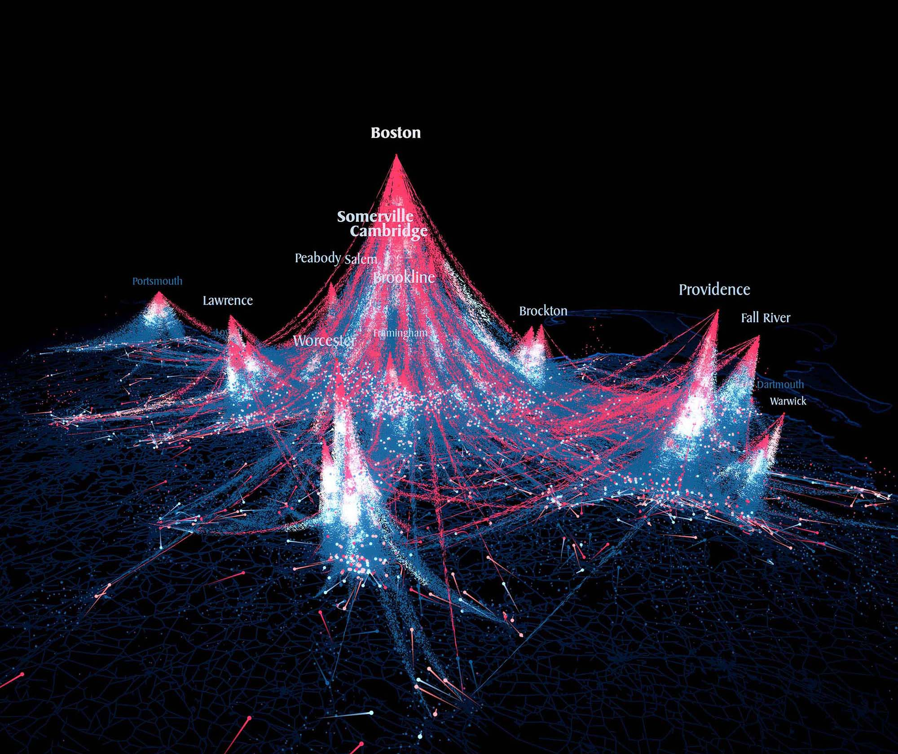
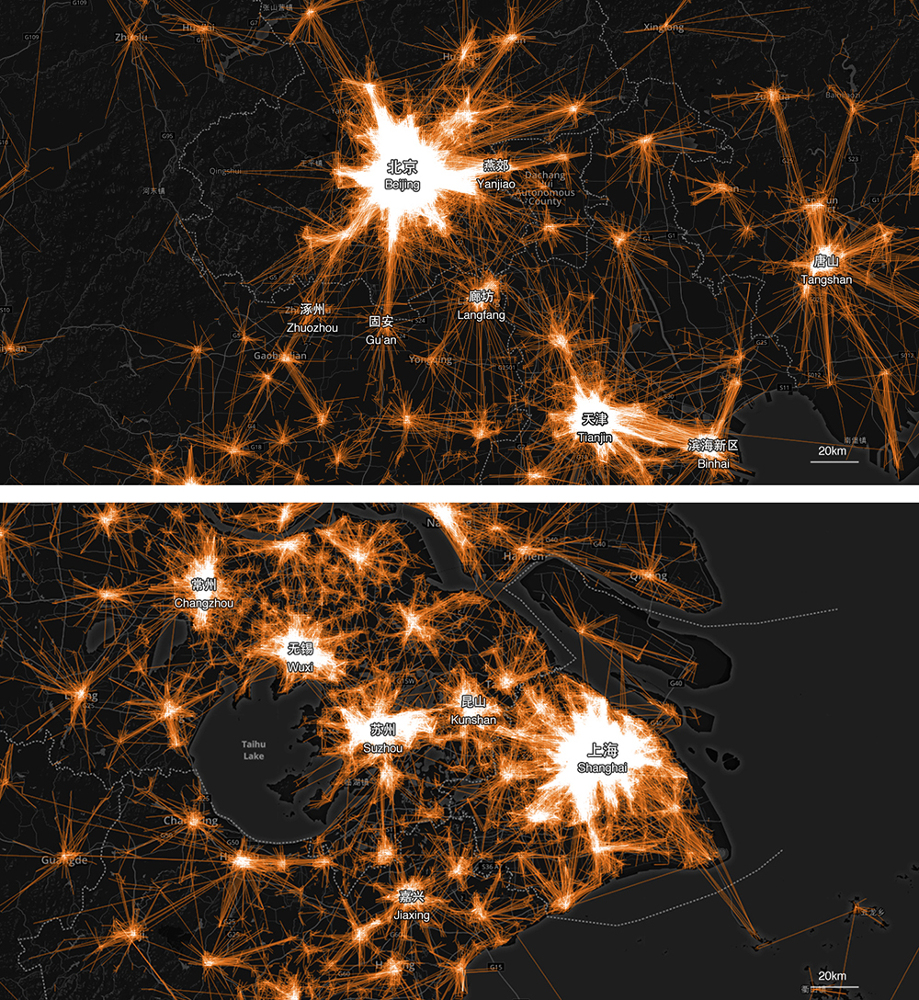
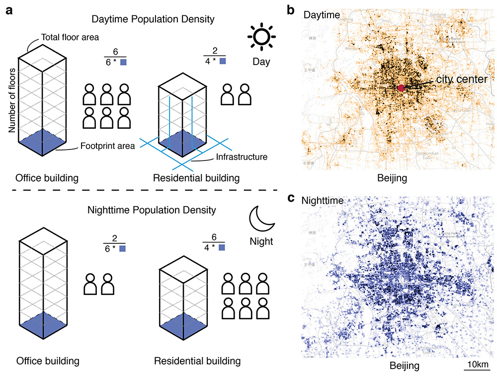

My research interests and topics.
Human Mobility and Urban Structure
i. Universal laws of human mobility
- frequency | visitation | preferential exploration and preferential return | central place theory

The universal visitation law of human mobility. Nature (2021).
- Markus Schläpfer+, Lei Dong+*, Kevin O’Keeffe+, Paolo Santi, Michael Szell, Hadrien Salat, Samuel Anklesaria, Mohammad Vazifeh, Carlo Ratti, and Geoffrey B. West
- News & Veiws | Project Web | Preprint | Slides | Data and Code
Wanderlust: 3D impressionism in human journeys. IEEE VIS (2021).
- Guangyu Du, Lei Dong, Fabio Duarte, and Carlo Ratti
ii. Urban networks
- commuting pattern | metropolitan area | polycentric structure

Commuting networks of Beijing-Hebei-Tianjin (top) and Yangtze River Delta (Bottom).
- The universality of urban commuting across and within cities. Working paper.
- Lei Dong, Paolo Santi, Yu Liu, Siqi Zheng, and Carlo Ratti
iii. Network efficiency
- road network efficiency | navigation | search information

Understanding urban routing behaviours from an information perspective. Working paper.
- Zhuojun Jiang, Lei Dong*, Lun Wu, and Yu Liu
Population-weighted efficiency in transportation networks. Scientific Reports (2016).
- Lei Dong, Ruiqi Li, Jiang Zhang, and Zengru Di
Scaling Laws in Urban Systems
i. Mesoscopic scaling laws
- spatial interaction | mesoscopic scaling | mobile phone data

- Understanding the mesoscopic scaling patterns within cities. Scientific Reports (2021).
- Lei Dong, Zhou Huang, Jiang Zhang, and Yu Liu
ii. Spatial attraction model
- spatial attraction | matching growth | active population

Simple spatial scaling rules behind complex cities. Nature Communications (2017).
- Ruiqi Li, Lei Dong, Jiang Zhang, Xinran Wang, Wen-Xu Wang, Zengru Di, and H.E. Stanley
The geometric origins of complex cities. Proceedings of European Conference on Complex Systems (ECCS), 2016.
- Ruiqi Li, Lei Dong, Xinran Wang, and Jiang Zhang
iii. City boundaries and scaling laws
city boundaries | MAUP | percolation | scaling laws
Quantifying urban areas with multi-source data based on percolation theory. Remote Sensing of Environment (2020).
- Wenpu Cao, Lei Dong*, Lun Wu, and Yu Liu
The definition of city boundary and scaling law. Acta Geographica Sinica (地理学报) (2017).
- Lei Dong, Hao Wang, and Hongrui Zhao
iv. Urban cells
- Paper in preparation
Big Data and Socioeconomic Activity
i. Nowcasting socioeconomic activity
- population | employment | consumption | nowcasting
Predicting neighborhoods’ socioeconomic attributes using restaurant data. Proceedings of the National Academy of Sciences (PNAS) (2019).
- Lei Dong, Carlo Ratti, and Siqi Zheng
- Project Web | Slides | Data and Code
Measuring economic activity in China with mobile big data. EPJ Data Science (2017).
- Lei Dong, Sicong Chen, Yunsheng Cheng, Zhengwei Wu, Chao Li, and Haishan Wu
ii. Poverty and development
- mobile internet | poverty | regional development

- Lei Dong and Haishan Wu. 2017. Mobile Internet and regional development in China. Environment and Planning A, 49(4):725-727. doi:10.1177/0308518X16676091
- Meng Zeng, Rong Shi, Lei Dong, Haishan Wu. 2016. The Living Standards Dimension of the Human Development Index. UNDP Report. Link